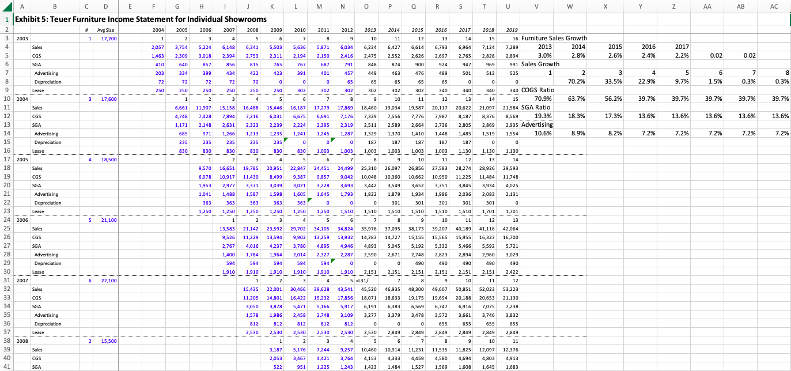
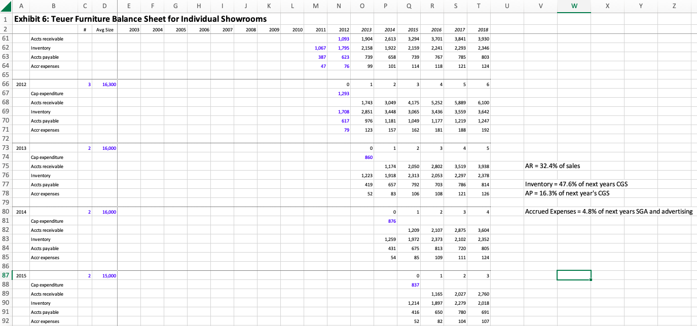
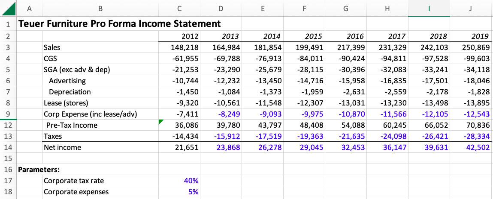
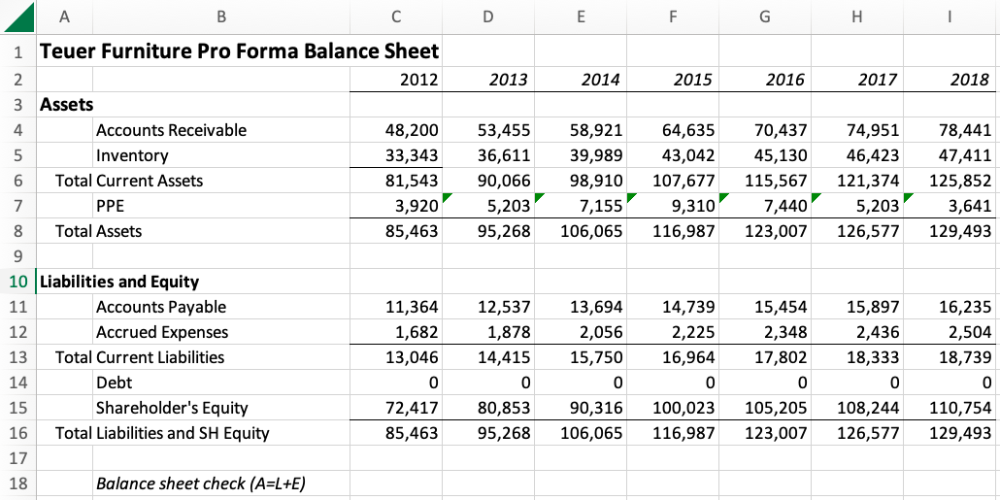
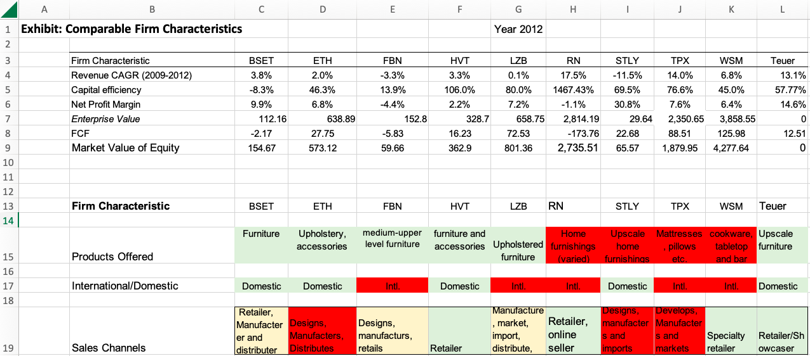
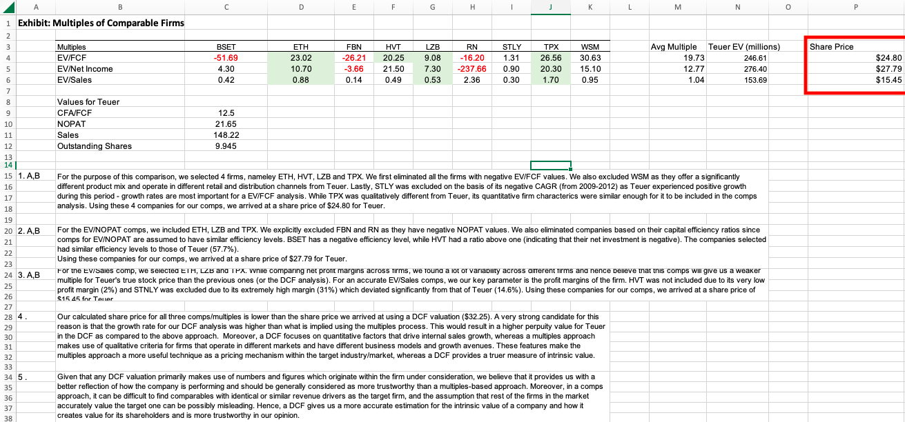

The first step in completing the DCF, was to compute the sales for each of the
company's individual showrooms from 2013-2019 (the given forecast period). Since
this valuation takes place in 2012, we need to forecast the values for the sales
for these years. I applied decreasing growth rate values, that were determined by
looking at historical growth rates, to each year. After forecasting the sales, I
finished the income statement by applying different rates and ratios I determined
from looking at historical data, to each of the other five line items.

For the balance sheet for each individual showroom, a similar process as the one
above was implemented. Using historical data, I determined what percentage of each
year's sales should be taken to determine the accounts recievables. For each line
below it, the same process was applied using the different ratios of the different
line items shown. The capital expenditures were dependant on future purchase plans.

This is the pro forma income statement, taking into account all of the company's
showrooms. I summed up all of the values from all showrooms for each of the line
items presented in the Exhibit 5, to get to the final net income for each year.

These are the same steps as the ones described above but for the pro forma balance
sheet.

This is the final step in the DCF analysis. Putting together both the income
statement and the balance sheet to create the cash flow statement, resulting in
the forecasted cash flows for each year. The sum of these cash flows can then be
discounted to the present value using the given discount rate, and summed to the
present value of the terminal value. This gives us the asset value of the firm.
To then get the value of a singular share of the firm, we divide the asset value
by the number of shares outstanding. The price per share is 32.25.

The first step in completing the public comparables valuation is to find comparable
companies to the one you are trying to value. Given a list of furniture stores, I
calculated six quantitative and three qualitative characteristics about each of
the different furniture stores.

I used the quantitative characteristics from the table above to calculate three
different multiples for each of the different furniture stores. I compared these
multiples and the qualitative characteristics from the table above with the
multiples and qualitative characteristics of Teuer, to decide which companies were
most comparable to Teuer. I ended up choosing ETH, HVT, LZB and, TPX as the most
comparable. I calculated what the share price would be using each of the three
multiples averaged between the chosen companies. The three share prices were 24.80,
27.79, and 15.45. All three resulting share prices are lower than the 32.25 we got
from the DCF. Although this is slightly discouraging as the public comparables is
supposed to serve as a supplement to the DCF, the DCF is always to be trusted more
as it is a more intrinsic valuation approach.